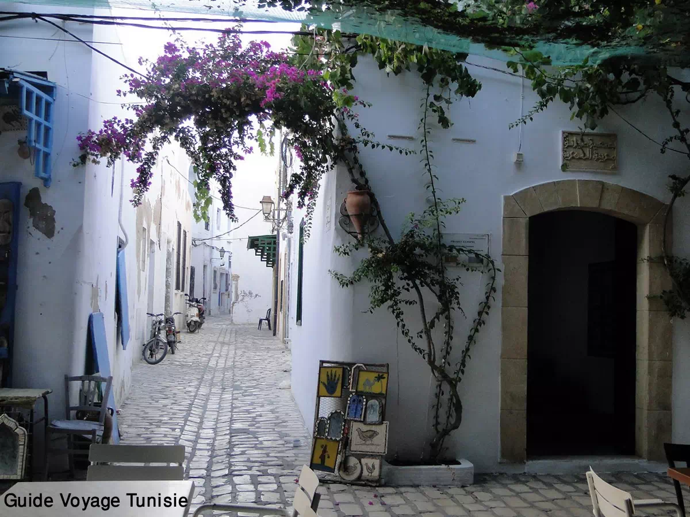
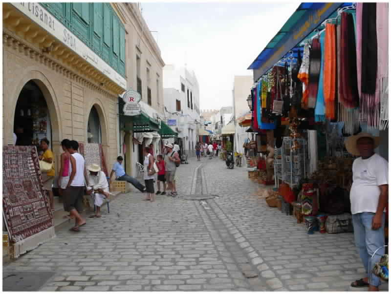

Située à 200 km de la capitale Tunis, La Mahdia est une ville côtière qui a connu durant les dernières décennies un réel essor touristique.
Mahdia est tout d’abord un comptoir phénicien puis romain sous le nom d’Aphrodisium. Les fatimides la fondèrent en 920 pour en faire la capitale de leur califat. Le calife fondateur, Abdoullah-El-Mehdi (909-934) qui, après la chute des aghlabides (909),
a changé le centre du pouvoir, l’avait choisie pour son emplacement stratégique. Hilaliens, chrétiens, espagnols et Turcs ont tour à tour occupé ou libéré la Ville.
Ce sont les espagnols qui ont détruit ses remparts et mis la cité à feu et à sang, en 1555. Après cette date la Ville avait perdu de son importance militaire et commerciale, notamment sous la domination turque et husseinite.
Cité au passé glorieux, Mahdia fut la première capitale des califes fatimides au Xe siècle, est bâtie à fleur de rocher sur une presqu’île. Elle tire tout son charme de sa mer cristalline au couleur de saphir, de ses magnifiques plages de sable fin, de
sa Médina et de son animation de petite ville traditionnelle, ville de pêcheurs et de tisseurs de soie.
La mer Méditerranéenne berce paisiblement les navires du port de Mahdia, pendant que les habitants s’abandonnent aux rayons de soleil à la plage. La longue côte de sable doré attire chaque année de nombreux touristes qui viennent se ressourcer dans ses
multiples hôtels luxueux.
Aujourd’hui, la Mehdia joue essentiellement un rôle touristique. Ses hôtels et la beauté de sa côte font d’elle une attraction pour nombreux touristes qui cherchent le calme et la possibilité de visiter des vestiges datant de l’époque romaine jusqu’à
l’arrivée des arabes. Mahdia a le charme particulier des villes maritimes.Son port de pêche,l’un des plus importants de Tunisie,est spécialisé en particulier dans la pêche à la lueur des lumparos qui créent, les soirs d’été, au départ
des chalutiers, un spectacle fascinant, illuminant la mer et le port de Mahdia de mille bougies.
Les amateurs de plongée sous-marine s’enthousiasmeront pour les fonds de Mahdia, tout en rêvant à la célèbre épave archéologique explorée jadis par le Commandant Cousteau…
Visites culturelles et thématiques
Des lieux à voir, des rues à explorer et des expériences emblématiques.
Dans la petite bourgade d'El Jem s'élèvent les ruines impressionnantes du plus grand colisée d'Afrique du Nord, immense amphithéâtre où pouvaient prendre place 35 000 spectateurs. Cette construction du IIIe siècle
illustre l'extension et la grandeur de l'Empire romain.
L’amphithéâtre d’El Jem est un témoignage exceptionnel de l’architecture romaine, notamment celle des monuments construits à des fins de spectacle, en Afrique. Situé dans une plaine au centre de la Tunisie, cet amphithéâtre, construit entièrement en pierre
de taille, n’est ni creusé ni adossé à une colline. Il reprend en cela le modèle du Colisée de Rome sans toutefois être une simple copie conforme de l'édifice flavien. Ses dimensions (grand axe de 148 mètres
et petit axe de 122 mètres) et sa contenance (évaluée à 35 000 spectateurs) le classent incontestablement parmi les plus grands amphithéâtres du monde. Sa façade comporte trois étages d’arcades de style corinthien
ou composite. À l’intérieur, le monument a conservé la majeure partie de l’infrastructure de support des gradins. Le mur du podium, l’arène et les souterrains sont pratiquement intacts. Cette œuvre architecturale
et artistique érigée vers 238 apr. J.-C.
Ce musée se veut autant le reflet de l’histoire générale du pays à laquelle la ville a contribué par un bon chapitre, que celui, plus spécifique, de Mahdia elle-même. Inauguré en 1997, ses collections présentent
plusieurs pièces dont des céramiques appartenant aux périodes puniques et romaines, un bel ensemble de mosaïques, un trésor d’époque byzantine avec ses 268 monnaies d’or ainsi que divers objets de la période
islamique.
le musée de Mahdia nous restitue, au rez-de-chaussée, des objets remontant à l’antiquité libyco-punique et romano-africaine tandis qu’une partie de l’étage est consacrée au legs des époques byzantine et islamique. La civilisation grecque est représentée
par deux colonnes en marbre en partie rongées par les mollusques et provenant d’une épave romaine chargée d’un butin de guerre ayant fait naufrage au large de Mahdia et dont l’essentiel du chargement, récupéré
dans les années 40,
Se restaurer
Lieux incontournables où manger, boire et faire la fête.
On a proposé deux destinations pour vous à ne rater
Des lieux à voir, des rues à explorer et des expériences emblématiques.
la médina
une architecture et structure captivante
Voir Plus
A quelques minutes des hôtels, se dresse la médina de Mahdia qui regorge d’histoire et de charme. La médina de Mahdia est une des plus intéressantes de la Tunisie. Sa structure est organisée en deux périphéries est-ouest : une qui commence de la Skifa
el Kahla pour se terminer à la place de la grande mosquée. Elle regroupe les espaces publics que sont les cafés, les ateliers d’artisans (on en dénombre une centaine aujourd’hui), le hammam et la mosquée. L’autre espace
dédié aux habitations atteint l’ouest de la Skifa jusqu’aux limites du cimetière marin. La médina accueille six mosquées en son sein. Les souks sont regroupés dans les deux rues parallèles qui vont de la Skifa à la Grande
Mosquée. Hormis les boutiques touristiques, vous découvrirez toute la richesse de l’artisanat de Mahdia à travers les très nombreux bijoutiers et ateliers de tissage : bijoux d’or, d’argent et d’ambre ; tissus de coton,
en soie et fils d’or, aux couleurs vives et variées.
― Gouvernerat de Mahdia
regarder plus de photos

Library
Architect Design
Night Sky
Cinematic
Tea Talk
Composite

Road
Landscape
Sea
Cityscape
Vintage
Cinematic
Salakta
une nature superbe et splandide
Voir Plus
Mahdia abrite sans aucun doute les plus belles plages de la Tunisie. La beauté de ses plages réside dans l’aspect limpide de l’eau, dans le sable fin, mais également dans leur aspect vierge et sauvage. Les plages de Mahdia s’étendent sur des kilomètres
et des kilomètres. Vous trouverez de nombreuses plages totalement vierges mais si vous préférez des plages plus animées ou les plages privées des hôtels, vous serez servi également. Vous n’aurez pas à parcourir des dizaines
de kilomètres pour dénicher une plage vierge, il faut juste sortir de la ville et vous aurez le bleu de la Méditerranée comme si vous étiez seul au monde. Mahdia n’a pas que ses plages, son sable et son soleil à offrir
aux touristes, elle constitue également une destination culturelle à part entière avec ses ruines antiques et son cimetière marin.

.jpg)

.jpg)